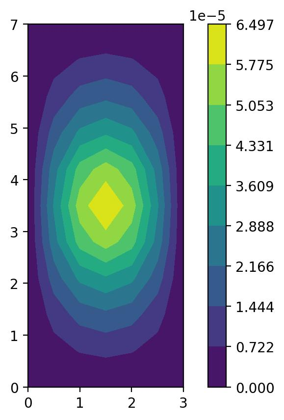

Linear static analysis#
The figure below shows the normal displacement of a simply supported plate with a point load applied to it.
The code used to generate this figure is extracted from one of pyfe3d unit
tests:
import sys
sys.path.append('..')
import numpy as np
from scipy.sparse.linalg import cg
from scipy.sparse import coo_matrix
from pyfe3d.shellprop_utils import isotropic_plate
from pyfe3d import Quad4, Quad4Data, Quad4Probe, INT, DOUBLE, DOF
def test_static_plate_quad_point_load(plot=False):
data = Quad4Data()
probe = Quad4Probe()
nx = 7
ny = 11
a = 3
b = 7
h = 0.005 # m
E = 200e9
nu = 0.3
xtmp = np.linspace(0, a, nx)
ytmp = np.linspace(0, b, ny)
xmesh, ymesh = np.meshgrid(xtmp, ytmp)
ncoords = np.vstack((xmesh.T.flatten(), ymesh.T.flatten(), np.zeros_like(ymesh.T.flatten()))).T
x = ncoords[:, 0]
y = ncoords[:, 1]
z = ncoords[:, 2]
ncoords_flatten = ncoords.flatten()
nids = 1 + np.arange(ncoords.shape[0])
nid_pos = dict(zip(nids, np.arange(len(nids))))
nids_mesh = nids.reshape(nx, ny)
n1s = nids_mesh[:-1, :-1].flatten()
n2s = nids_mesh[1:, :-1].flatten()
n3s = nids_mesh[1:, 1:].flatten()
n4s = nids_mesh[:-1, 1:].flatten()
num_elements = len(n1s)
KC0r = np.zeros(data.KC0_SPARSE_SIZE*num_elements, dtype=INT)
KC0c = np.zeros(data.KC0_SPARSE_SIZE*num_elements, dtype=INT)
KC0v = np.zeros(data.KC0_SPARSE_SIZE*num_elements, dtype=DOUBLE)
N = DOF*nx*ny
prop = isotropic_plate(thickness=h, E=E, nu=nu, calc_scf=True)
quads = []
init_k_KC0 = 0
for n1, n2, n3, n4 in zip(n1s, n2s, n3s, n4s):
pos1 = nid_pos[n1]
pos2 = nid_pos[n2]
pos3 = nid_pos[n3]
pos4 = nid_pos[n4]
r1 = ncoords[pos1]
r2 = ncoords[pos2]
r3 = ncoords[pos3]
normal = np.cross(r2 - r1, r3 - r2)[2]
assert normal > 0
quad = Quad4(probe)
quad.n1 = n1
quad.n2 = n2
quad.n3 = n3
quad.n4 = n4
quad.c1 = DOF*nid_pos[n1]
quad.c2 = DOF*nid_pos[n2]
quad.c3 = DOF*nid_pos[n3]
quad.c4 = DOF*nid_pos[n4]
quad.init_k_KC0 = init_k_KC0
quad.update_rotation_matrix(ncoords_flatten)
quad.update_probe_xe(ncoords_flatten)
quad.update_KC0(KC0r, KC0c, KC0v, prop)
quads.append(quad)
init_k_KC0 += data.KC0_SPARSE_SIZE
KC0 = coo_matrix((KC0v, (KC0r, KC0c)), shape=(N, N)).tocsc()
print('elements created')
bk = np.zeros(N, dtype=bool)
check = np.isclose(x, 0.) | np.isclose(x, a) | np.isclose(y, 0) | np.isclose(y, b)
bk[2::DOF] = check
bk[0::DOF] = True
bk[1::DOF] = True
bu = ~bk
# point load at center node
fext = np.zeros(N)
fmid = 1.
check = np.isclose(x, a/2) & np.isclose(y, b/2)
fext[2::DOF][check] = fmid
KC0uu = KC0[bu, :][:, bu]
assert fext[bu].sum() == fmid
uu, info = cg(KC0uu, fext[bu], atol=1e-9)
assert info == 0
u = np.zeros(N)
u[bu] = uu
w = u[2::DOF].reshape(nx, ny).T
# obtained with bfsplate2d element, nx=ny=29
wmax_ref = 6.594931610258557e-05
# obtained with Quad4 nx=7, ny=11
wmax_ref = 6.496928101916171e-05
print('w.max()', w.max())
assert np.isclose(wmax_ref, w.max(), rtol=0.02)
fint = np.zeros(N)
for quad in quads:
quad.update_probe_xe(ncoords_flatten)
quad.update_probe_ue(u)
quad.update_fint(fint, prop)
# NOTE adding reaction forces to external force vector
Kku = KC0[bk, :][:, bu]
fext[bk] = Kku @ u[bu]
atol = 1e-5
tmp = np.where(np.logical_not(np.isclose(fint, fext, atol=atol)))
print(tmp)
print(fint[tmp[0]])
print(fext[tmp[0]])
print((KC0@u)[tmp[0]])
assert np.allclose(fint, fext, atol=atol)
if plot:
import matplotlib.pyplot as plt
plt.gca().set_aspect('equal')
levels = np.linspace(w.min(), w.max(), 10)
plt.contourf(xmesh, ymesh, w, levels=levels)
plt.colorbar()
plt.show()
#plt.savefig('ex_linear_static_figure.jpg', dpi=200,
#bbox_inches='tight')
if __name__ == '__main__':
test_static_plate_quad_point_load(plot=True)